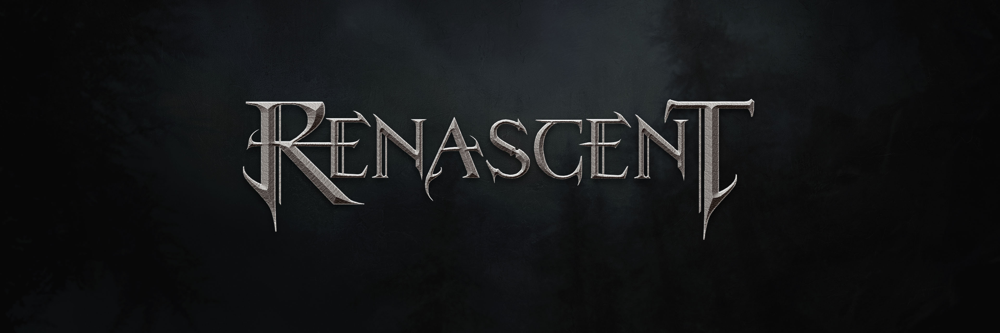

Renascent
Current project — in development
A third-person action RPG set at the threshold between life and the Finnish underworld. Die. Return. Ascend.
The player arrives at the gates of Manala — the Finnish afterlife — and is pulled back by a pale spirit woman, bound to an impossible tower called Oathwell by an ancient talisman. The talisman returns the player to Oathwell upon death, cursing them to ascend the tower as many times as it takes.
Renascent draws from Finnish shamanic mythology and folklore rather than the more familiar Norse or Celtic traditions. Shamans, nature spirits, ancient curses, and the will to survive against forces that predate memory.

Details
Genre
Third-person action RPG — souls-like combat, roguelite progression
Engine
Unreal Engine 5
Platform
PC — Steam (planned)
Status
Early development
Interested in following the development of Renascent? The devblog covers progress updates, art direction decisions, and the making-of as the project takes shape.